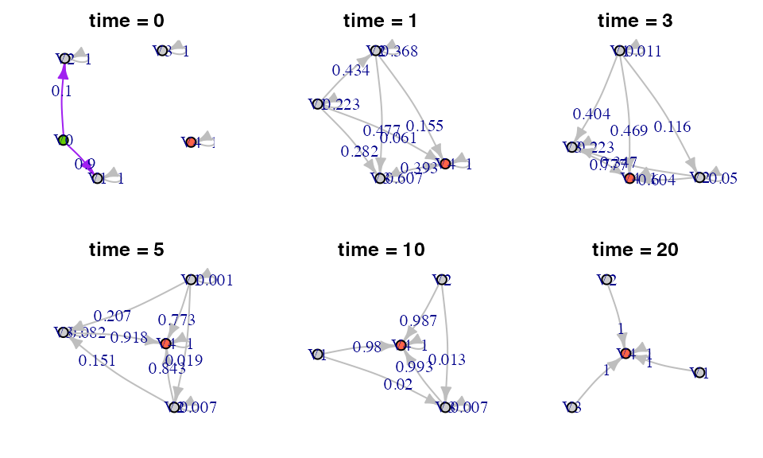
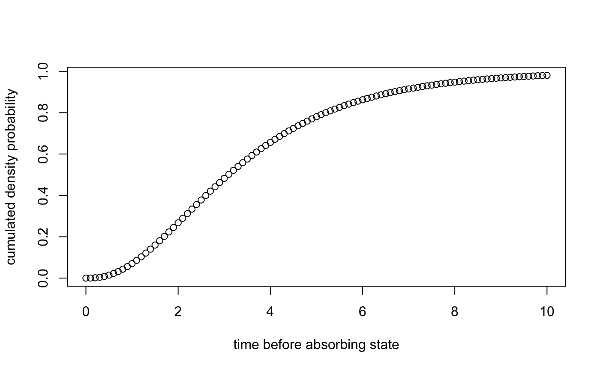
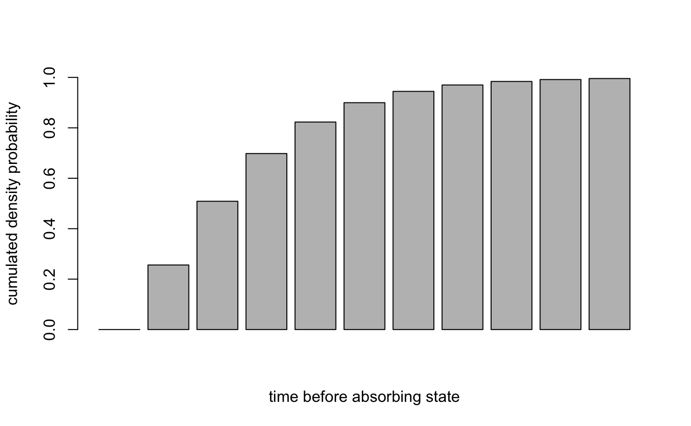
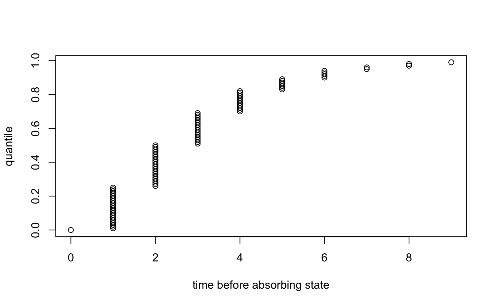

library(phasty) #> Loading required package: expm #> Loading required package: Matrix #> #> Attaching package: 'expm' #> The following object is masked from 'package:Matrix': #> #> expm #> #> Attaching package: 'phasty' #> The following object is masked from 'package:Matrix': #> #> mean #> The following object is masked from 'package:stats': #> #> var #> The following object is masked from 'package:base': #> #> mean
Introduction
Phase-type distributions is an important mathematical tool especially in fields like insurance or population genetics.
The basic idea is considering a markov jump process (or a Markov chain for discrete cases) with \(n\) transient states and 1 absorbing state (i.e. once in the absorbing state, it cannot go out), you can have the time before reaching that absorbing state using with the intensity matrix and the initial probabilities to start in each state. The matrix form of pahse-type distribution allow great simplification in some calculus, in particular to find the moments of the time before reaching the absorbing state.
The package handle this phase-type distribution and the calculation behind it.
This package is a complete as possible, nevertheless, it stays a package which bring mathematical tools and its not oriented for a specific application.
The main references that have been used for this package are:
The phase-type S3 class object
The package use several new classes for describing a phase-type distributed object, which are: “disc_phase_type”, "cont_phase _type“,”mult_disc_phase_type“,”mult_cont_phase_type". Which can be obtain using , here is an example considering a univariate continuous phase_type distribution:
subintensity_matrix <- matrix(c(-1.5, 0, 0, 1.5, -1, 0, 0, 1, -0.5), ncol = 3) initial_probabilities <- c(0.9, 0.1, 0) ph <- phase_type(subintensity_matrix, initial_probabilities) print(ph) #> $subint_mat #> [,1] [,2] [,3] #> [1,] -1.5 1.5 0.0 #> [2,] 0.0 -1.0 1.0 #> [3,] 0.0 0.0 -0.5 #> #> $init_probs #> [,1] [,2] [,3] #> [1,] 0.9 0.1 0 #> #> $defect #> [1] 0 #> #> attr(,"class") #> [1] "cont_phase_type"
With the subintensity matrix and the vector of initials probabilities. An object of one of the phase_type class should have a subintensity matrix, a initial probability vector, a defect being the probability to start directly in the absorbing state, which can happens when using reward transformation (see section )) and the type of class.
The init_probs are optional in the inputs, in that case the probability to start in the first state will be 1.
Those classes will be necessary later on to recognise the type of object for function like mean or var.
The univariate distribution
The continuous univariate phase-type
A few reminders
For a deep understanding of the continuous phase-type distribution, we deeply advise the reader to take a look at the book of Bladt and Nielsen 2007 [PUT THE REF]
Let’s consider \(\{ X_t \}_{t \ge 0}\) a Markov jump process with \(p\) transient states and 1 absorbing state, we can write the state space of \(\{ X_t \}_{t \ge 0}\) as \(E = (1,\, 2,\, 3,\, ...,\, p,\, p+1)\). This means that \(\{ X_t \}_{t \ge 0}\) will stay in the different transient states until it reachs the absorbing states from which it cannot go out. For a Markov jump process the time of transition bewteen each state follow a exponential distribution with a rate \(\lambda\). The intensity matrix summarize the transition rate with the rate \(\lambda_{i,j}\) in row \(i\) and column \(j\) corresponds to the transition rate from state \(i\) to state \(j\). In the case where there are \(p\) transient state and 1 absorbing state, the intensity matrix can be written: \[ \boldsymbol{\Lambda} = \left(\begin{array}{cc} \boldsymbol{T} & \boldsymbol{t} \\ \boldsymbol{0} & 0 \end{array}\right) \] Where \(\boldsymbol{T}\) is the subintensity matrix, i.e. the intensity matrix between the transient states only and \(\boldsymbol{t}\) is the exit rate, i.e. the transition rate between the transient states and the abosrbing state.
If we take a look at the subintensity matrix \(\boldsymbol{T}\), we will have a negative diagonal corresponding to the rate at which \(\{ X_t \}_{t \ge 0}\) will leave the state \(i\). The other cell of the matrix should be non positive and will contain the transition rate from one transient state to another. Also the rowsum should be non-positive, and the vector of absolute value of the rowsum correspond to the exit rate vector. Because of that we can note: \[ \boldsymbol{t} = -\boldsymbol{Te}, \]
Where \(\boldsymbol{e}\) is vector of 1 of length \(p\).
looking at the phase-type distribution of \(\{ X_t \}_{t \ge 0}\) corresponds to the probability that the time to reach the absorbing state is \(t\).
Given a variable \(X\) following a continuous phase-type distribution, \(X\sim PH(\boldsymbol{T}, \boldsymbol{\pi})\) where \(\boldsymbol{T}\) is the subintensity matrix and \(\boldsymbol{\pi}\) the initial probability vector.
The functions
Let’s take the same example as before to explain how to use the different functions:
subintensity_matrix = matrix(c(-1.5, 0, 0, 1.5, -1, 0, 0, 1, -0.5), ncol = 3) initial_probabilities = c(0.9, 0.1, 0) ph = phase_type(subintensity_matrix, initial_probabilities) print(ph) #> $subint_mat #> [,1] [,2] [,3] #> [1,] -1.5 1.5 0.0 #> [2,] 0.0 -1.0 1.0 #> [3,] 0.0 0.0 -0.5 #> #> $init_probs #> [,1] [,2] [,3] #> [1,] 0.9 0.1 0 #> #> $defect #> [1] 0 #> #> attr(,"class") #> [1] "cont_phase_type"
The initial probability are optional, if they are not provided, the initial probability vector will be \(\pi = (1,\, 0,\, 0,\, ...)\).
Now that we have a phase-type distributed variable we can apply some basic function as follow
cat('Mean: ',mean(ph),'\n') #> Mean: 3.6 cat('Variance: ',var(ph),'\n \n') #> Variance: 5.44 #> cat('Summary: \n-------------') #> Summary: #> ------------- summary(ph) #> #> Subintensity matrix: #> [,1] [,2] [,3] #> [1,] -1.5 1.5 0.0 #> [2,] 0.0 -1.0 1.0 #> [3,] 0.0 0.0 -0.5 #> #> Initial probabilities: #> [,1] [,2] [,3] #> [1,] 0.9 0.1 0 #> #> Defect: #> [1] 0 #> #> Mean: 3.6 #> #> Variance: 5.44 cat('-------------') #> -------------
x <- seq(0, 10, 0.1) y <- dphtype(x, ph) plot(x, y, xlab = 'time before absorbing state', ylab = 'density probability')

y <- pphtype(x, ph) plot(x, y, xlab = 'time before absorbing state', ylab = 'cumulated density probability')

y <- seq(0, 0.99, 0.01) x <- qphtype(y, ph) plot(x, y, xlab = 'time before absorbing state', ylab = 'quantile')

cat('10 random samples: \n \n', rphtype(5, ph), '\n', rphtype(5, ph)) #> 10 random samples: #> #> 5.078757 1.485009 2.449289 3.652611 2.334932 #> 3.574192 2.127139 5.504208 0.3806223 5.073861
It is possible to give to each transient state a weight by a reward transformation, to do so we will use a reward vector of size \(p\)
r = c(1,0,4) Y = reward_phase_type(phase_type = ph, reward = r) print(Y) #> $subint_mat #> [,1] [,2] #> [1,] -1.5 1.500 #> [2,] 0.0 -0.125 #> #> $init_probs #> [,1] [,2] #> [1,] 0.9 0.1 #> #> $defect #> [1] 0 #> #> attr(,"class") #> [1] "cont_phase_type"
The discrete univariate phase-type
subintensity_matrix <- matrix(c(0.4, 0, 0, 0.24, 0.4, 0, 0.12, 0.2, 0.5), ncol = 3) initial_probabilities <- c(0.9, 0.1, 0) dph <- phase_type(subintensity_matrix, initial_probabilities) print(dph) #> $subint_mat #> [,1] [,2] [,3] #> [1,] 0.4 0.24 0.12 #> [2,] 0.0 0.40 0.20 #> [3,] 0.0 0.00 0.50 #> #> $init_probs #> [,1] [,2] [,3] #> [1,] 0.9 0.1 0 #> #> $defect #> [1] 0 #> #> attr(,"class") #> [1] "disc_phase_type"
x <- seq(0, 10, 1) y <- dphtype(x, dph) barplot(y, xlab = 'time before absorbing state', ylab = 'density probability', ylim = c(0, 1))

y <- pphtype(x, dph) barplot(y, xlab = 'time before absorbing state', ylab = 'cumulated density probability', ylim = c(0, 1))

y <- seq(0, 0.99, 0.01) x <- qphtype(y, dph) plot(x, y, xlab = 'time before absorbing state', ylab = 'quantile')
